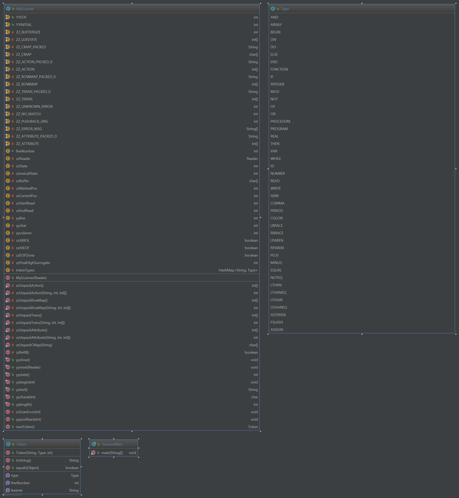

Bob Laskowski
Compilers II
Dr. Erik Steinmetz
4/27/2017
This program is a compiler to turn Mini-Pascal code into MIPS assembly code. The program has a scanner, parser, syntax tree, symbol table, performs code folding and generates MIPS assembly. I have used JFlex to define lexical rules and create a scanner. JFlex takes in a particular language and grammar defined by the user with regular expressions and converts it into java source code. The scanner is designed to scan our modified version of Mini-pascal. It will take in a text file and output tokens to be used later in the parser. The entire program was developed using IntelliJ IDEA 2017.1.2 and Java version 1.8.0_101 (Java 8).
I have also created a parser based on the grammar which can be found in the design section. The parser ensures that the tokens appear in an order that is valid according to the grammar. The parser is also integrated with a symbol table and builds a syntax tree as it parses. This keeps track of all the symbols declared such as the program name, variable names, function names, etc. and ensures there are no duplicates. The syntax tree that is built this has code folding performed on it to optimize compilation. The folded syntax tree is then traversed to generate the assembly code.
The program is divided up in to seven main modules. See Figure 7 for a UML diagram detailing the classes in all the packages.
The first module is the scanner. There is a scanner.flex file that contains the JFlex code. I ran this code through JFlex to generate the MyScanner.java file. The scanner will properly parse all but invalid input files. When the scanner encounters errors it will display an error message and try to continue compilation. Also inside the scanner module there are Token.java and Type.java classes. Token defines a Token object which contains a string with the actual lexeme and a Type. The Type is an enumerated type defined in the Type class. There is a Type for each keyword, symbol as well as types for ID and number. See below for a list of symbols and keywords in Mini-pascal. Also see Figure 1 for the UML diagram of this package.
The scanner will recognize the following keywords and symbols:
KEYWORDSThe lexical rules the scanner and parser follow can be found in the following document: The Grammar
The parser uses the scanner to advance through text token by token and determine if they are in a valid order to be a mini-pascal program. Every function in the parser exactly corresponds to a production rule in the grammar. It uses a one token lookahead to see what the next token is and make a decision on whether to call other functions or match tokens. It begins by calling the top level function, program, which in turn matches program id ; if they are the first three tokens in the file. If it does not see what it expects to match it displays an error message with a line number and the program tries to continue compilation. After it matches these three tokens it calls the declarations function and proceeds on down the tree of function calls. The parser also performs semantic analysis as it traverses the program. The types of semantic analysis performed are: making sure all variables are declared before they are used, ensuring every expression has a type (real/integer), ensuring that types match across assignments and ensuring the arguments passed to function calls match the expected types. For all the semantic analysis, integers are promoted to reals. However, if a real is assigned to an integer or passed to a function when an integer is expected, an error will be thrown. See Figure 2 for the UML diagram of this package.
As the parser traverses the program, whenever it encounters a declaration of a program, function, variable, array or procedure, it adds that name to the symbol table along with some information about the symbol. For variables, the name and type (integer/real) are stored. For functions, the name, list of argument types, a local symbol table and return type are stored. For arrays, the name, type, beginning and ending index are stored. For procedures and programs, just the name is stored. To deal with scope, the function arguments and any variables declared inside the function are stored in the local symbol table. The entire symbol table is actually a stack of hash maps, which use a string name as a key and a symbol object as the value. The symbol object is an internal class inside symbol table that defines what data to store for each entry in the symbol table. To deal with scope, the local symbol tables are pushed and popped off the stack of symbol tables depending on where the parser is in the program. This allows the program to access local variables or global variables within function/procedure scores and only global variables in the global scope. To handle return values of functions, a new VariableNode with the same name and type as the function is added to the local symbol table of that function at the time the function is declared. Thus, the return values of the function should be assigned to the name of the function at some point in the function declaration. When the program is run, the symbol table will be printed to the "program name".table file. This is simply a text file. See Figure 3 for the UML diagram of this package.
The syntax tree has been integrated into the parser. Now, as it parses the program, nodes corresponding to different parts of the grammar are created and added to a tree. The top level node is the SyntaxTreeNode, which all the nodes inherit from. The various types of nodes store different information about the parts of the program. The syntax tree created will later be traversed for code generation. A visual representation of all the information stored in the syntax tree is printed to the "program name".tree file when the compiler is run. Special nodes have been created for the built in read and write functions of the mini-pascal language. These functions take in input from or display input to the console respectively. See Figure 4 for the UML diagram of this package.
Code folding is performed on the syntax tree generated. This helps improve the efficiency of the program by evaluating expressions in the higher level language before they are converted to assembly code. This results in easier code generation and more efficient assembly. Code folding works by evaluating any expressions possible before function/procedure calls, variable assignments or array index access. Examples would include the following:
Code folding works by traversing the syntax tree generated by the parser and looking for expressions. If the OperationNode contains values, it performs the designated operation and updates the tree. The result of running the code folding is a new Syntax Tree. Code folding is run after the original syntax tree is generated. Only the folded tree is actually saved to the "program name".tree file. See Figure 5 for the UML diagram of this package.
The final module in the compiler is the code generation. This is the package that actually handles the generation of MIPS assembly code. This works by traversing the folded syntax tree and writing the appropriate MIPS assembly commands to carry out the instructions of the original mini-pascal code. A new CodeGeneration object is created with the Syntax Tree and Symbol Table from the parser passed into it and generateCode() is called. This begins a traversal of the tree, generating a string of assembly code as it goes. When variables are declared, their memory address is added to the symbol table to deal with scope. Variables in the global scope are written to the .data section and local variables/arguments for functions/procedures are handled in a special way by pushing them to the stack at the appropriate time. The global variables will simply have their name as their memory address for reference from the .data section while local variables and function/procedure arguments will have their offset from the stack pointer as their memory address, for example: 4($sp). Both read and write have been implemented, so text can be displayed to and input can be read from the console. To ensure no overwriting of registers, only $s registers are used. Also, all eight $s registers ($s0-$s7) are pushed and popped to and from the stack at the beginning and end of every function call, including main. To handle functions, the frame pointer is used, $fp. The old value of the stack pointer is assigned to the frame pointer before going into a function call. This allows us to push all the $s registers and then store the local variables as offsets of the stack. Then, at the end of the function, we move the value of the frame pointer back to the stack pointer to resume the running of the program. If and while statements have been implemented and work as expected as well as all the basic operations. Note that "and" and "or" are bitwise operations. Our version of mini-pascal treats 0 as false and 1 as true. See Figure 6 for the UML diagram of this package.
Note: The implementation of code generation is limited. Functions and procedures have been implemented, including recursion. However, real numbers and arrays have not yet been implemented. The code generation also does not handle nested functions (functions defined within functions). Everything up to the code generation handles all of these features.
To use this compiler to compile a mini-pascal program, use the .jar file in the "product" folder. Run from the command line using "java -jar compiler.jar input.pas". Alternatively, clone the BitBucket repository and open it as a project in IntelliJ or another Java IDE. Run the "CompilerMain" file in the compiler package with your mini-pascal file as the only command line argument. To then run the generated assembly code, localed the "program name".asm file generated, which should be localed in the same directory as the .jar was run from. Open this file in QtSpim, which can be downloaded here and click the run button. Note that a .table and .tree file will also be generated along with the .asm file in the same directory for reference. This sample .pas file and others can be found in the pascalfiles package within the src folder. See the user guide PDF located in the product folder for additional use information.
The following is an example of a Mini-pascal program that calculates the greatest common divisor of two integers recursively:
program example;
var x, y: integer;
function gcd(a, b: integer): integer;
begin
- if b=0 then gcd:=a
- else gcd:=gcd(b, a mod b)
end;
begin
- read(x);
- read(y);
- write(gcd(x,y))
end.
The following is the corresponding MIPS assembly code the compiler generates for this program:
.data
__newline__: .asciiz "\n"
__input__: .asciiz "input: "
x: .word 0
y: .word 0
.text
main:
#Push to stack
addi $sp, $sp, -40
sw $s7, 36($sp)
sw $s6, 32($sp)
sw $s5, 28($sp)
sw $s4, 24($sp)
sw $s3, 20($sp)
sw $s2, 16($sp)
sw $s1, 12($sp)
sw $s0, 8($sp)
sw $fp, 4($sp)
sw $ra, 0($sp)
# Read
li $v0, 4
la $a0, __input__
syscall
li $v0, 5
syscall
sw $v0, x
# Read
li $v0, 4
la $a0, __input__
syscall
li $v0, 5
syscall
sw $v0, y
#Syscall
#Expression
# Function call
#Expression
lw $a0, x
#Expression
lw $a1, y
jal gcd
move $s0, $v0
addi $v0, $zero, 1
add $a0, $s0, $zero
syscall
li $v0, 4
la $a0, __newline__
syscall
#Restore from stack
lw $s7, 36($sp)
lw $s6, 32($sp)
lw $s5, 28($sp)
lw $s4, 24($sp)
lw $s3, 20($sp)
lw $s2, 16($sp)
lw $s1, 12($sp)
lw $s0, 8($sp)
lw $fp, 4($sp)
lw $ra, 0($sp)
addi $sp, $sp, 40
jr $ra
# Function
gcd:
#Push to stack
addi $sp, $sp, -40
sw $s7, 36($sp)
sw $s6, 32($sp)
sw $s5, 28($sp)
sw $s4, 24($sp)
sw $s3, 20($sp)
sw $s2, 16($sp)
sw $s1, 12($sp)
sw $s0, 8($sp)
sw $fp, 4($sp)
sw $ra, 0($sp)
move $fp, $sp
addi $sp, $sp, -12
sw $a0, 0($sp)
sw $a1, 4($sp)
sw $a2, 8($sp)
#If statement
#Expression
lw $s0, 4($sp)
#Expression
li $s1, 0
bne $s0, $s1, else0
# then
#Assignment
#Expression
lw $s0, 0($sp)
sw $s0, 8($sp)
j endIf0
# else
else0:
#Assignment
#Expression
# Function call
#Expression
lw $a0, 4($sp)
#Expression
#Expression
lw $s2, 0($sp)
#Expression
lw $s3, 4($sp)
div $s2, $s3
mfhi $a1
jal gcd
move $s1, $v0
sw $s1, 8($sp)
endIf0:
lw $v0, 8($sp)
addi $sp, $sp, 12
move $sp, $fp
#Restore from stack
lw $s7, 36($sp)
lw $s6, 32($sp)
lw $s5, 28($sp)
lw $s4, 24($sp)
lw $s3, 20($sp)
lw $s2, 16($sp)
lw $s1, 12($sp)
lw $s0, 8($sp)
lw $fp, 4($sp)
lw $ra, 0($sp)
addi $sp, $sp, 40
jr $ra
For testing of the scanner, symbol table, parser and code folding I used JUnit5. The testing can be found in the
test package inside of the corresponding parent packages. The unit tests of scanner test yytext and
nextToken functions. The tests used several text input files that contain sample Mini-pascal
code, plain text, a list of symbols, a list of numbers and IDs, and several incorrectly formatted items for the
scanner to parse. The unit tests of parser test the program, subprogram_declaration, declarations, statement,
simple_expression and factor functions. For the scanner the file "simplest.pas" is used for
testing. For the parser the file "simple.pas" is used for testing as well as strings for testing individual
components of the parser. For testing the code generation, the files in the pascalfiles package were used.
Note: Some of the larger diagrams may be difficult to read. For better readability, right click on the image and "save image as". Then, open in an image viewing program and zoom in. All images are high quality.
